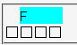
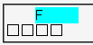

フロート化させたボックスに左右マージンを指定すると、指定値の2倍程度のマージンが設置される。
<div style="float:left; width:3em; margin-left:1em; background:aqua;">F</div> <div style="clear:left; font-family:'ＭＳ ゴシック',monospace;"> □□□□</div>
フロートには1emの左マージンを指定しています。次の行にある「□」の列を参考にしてマージンの量をみてください。
N7.02での表示（標準モード）
WinIE6.0での表示（標準モード）
WinIE5.5、WinIE6.0標準モード、WinIE6.0互換モードで不具合の発生が確認されました。